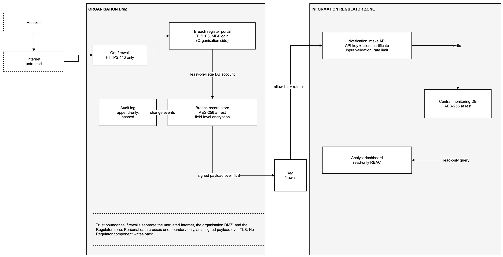
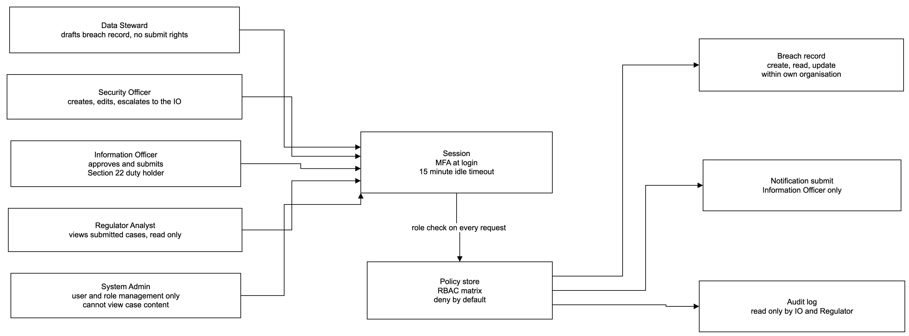
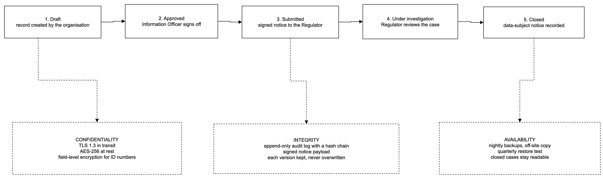
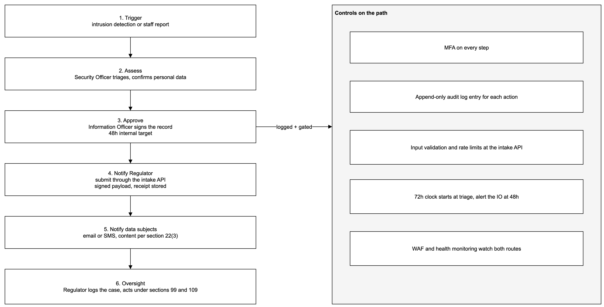

How the system fits together
Architecture
These drawings come from the group's own Deliverable 3. Each one carries labels showing what the build has finished and what is still ahead. The originals sit in docs/figures with their provenance.
Figure 6.1: Trust boundaries

Only the organisation side opens submission connections. The regulator answers with a bounded receipt and never calls back into organisation storage. The corrections behind this drawing are written up in the specification, section 3.1.
Figure 6.2: Access control

Analysts read cases and write notes. Supervisors move cases and assign work. Administrators manage accounts and see no case content. Anything without a matching grant is refused.
Figure 6.3: Lifecycle and record protection

Submitted versions are never edited. Every mutation leaves an audit row chained to the one before it, so any later edit breaks the chain at exactly the altered point.
Figure 6.4: Notification workflow

A report is drafted, approved at an exact revision, sent once and receipted. A retry with the same identity returns the stored receipt. Changed bytes under a reused identity are refused and logged.